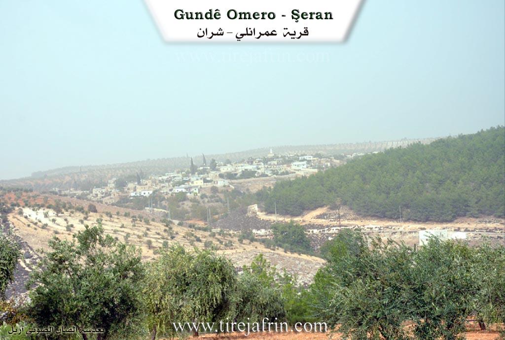
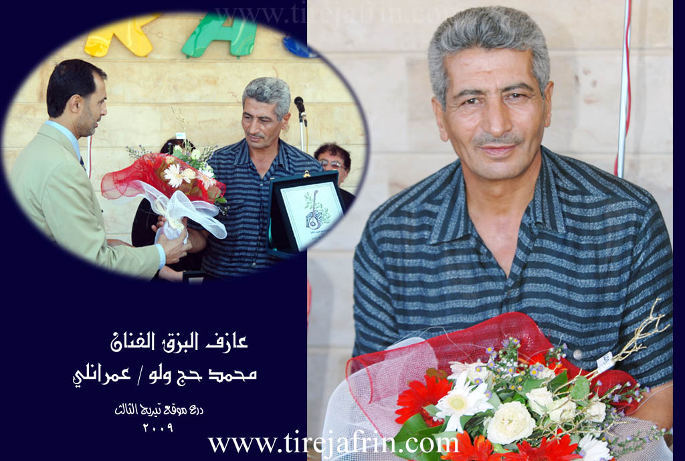
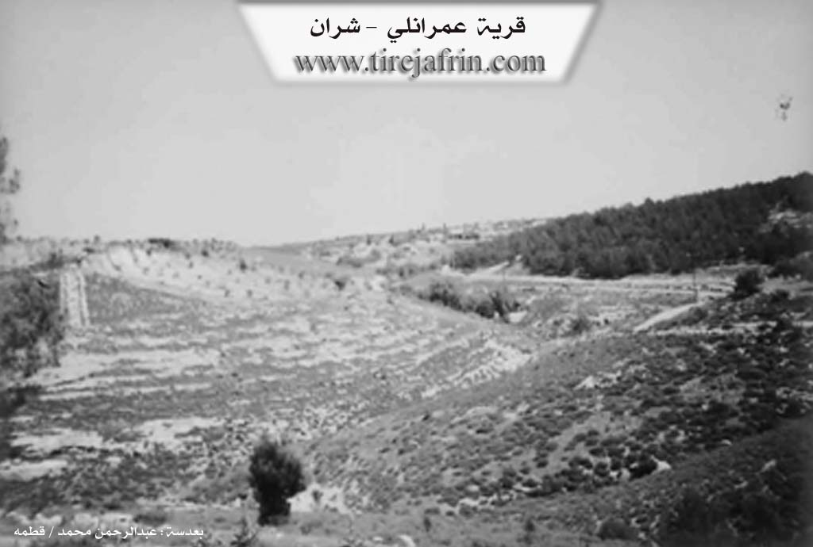

General Information
Nahiya (Subdistrict)
Şera
Also Known As
Al-Umriya, Amara, Geliyê Şîlo, Omara, Omera, Omeran, Omero, Omerê, Omranli, Umeran, العمرية, عمرانلي, اوماره
Tribes
Bêlî, Bû Sultan, Mîlî, Neîmî, Qeregiçî, Şikak, Şêxikî
Families, Clans, etc.
Dengîn, Hecî Welû, Mala Arfo, Mala Arfê Husê, Mala Ehmed Cimo, Mala Ehmed Mûrad, Mala Elî Sorik, Mala Elîwî, Mala Hec Welo, Mala Hewrê, Mala Hewîşê, Mala Hisên, Mala Kurêş, Mala Mihemedê Mêmikê, Mala Welîklero, Mala Welû, Mala Çome, Mala Çomê, Mala Îbo, Mala Îbramlerê, Mala Şêx Yûsif, Omer, Welo, Xoce

Photos



Basic Information about Omera
Source: Ax û Welat
Ruins: Dîdan
Source: Khalil Sino
Etymology: Named after Omer, an early settler described as a nephew (xwarzê) of the founding lineage
Foundation Date/Period: Approximately 300 to 400 years ago
Trees: Darê Çatma
Other Landmarks: Geliyê Şîlo
Summaries
I. Summary from TirejAfrin Site (English) of Omera
Source: https://www.tirejafrin.com/site/kura%20afrin%20%20sheran%20-%20Omera.htm
Based on the book Çiyayê Kurmênc (Efrîn): A Geographical Study: Omera, Omranlî, El-Omriye / 935 inhabitants - 1008 hectares - 4km - 570m /:
Etymology
Omera: A Kurdish proper noun derived from "Emer" (Omar). It is also the name of a clan of the Millî tribe of Mount Qerece Dax, and their dwellings are west of Qîrşehir (Zekî, Vol 1, p. 414).
Geography and Location
It is a medium-sized village located on a plateau furrowed by watercourses heading west towards the Efrîn river valley. The most important of these is the Sîman valley (Geliyê Sîman) with its spring and the huge plane trees (Darên Dilib) found in its course. The area located southwest of the village has been forested.
Based on the book Efrîn... Her River and Her Green Hills:
Omranlî: A village in Çiyayê Kurmênc following the Şera sub-district, Efrîn region, Heleb governorate (897 inhabitants).
It is a large village located in the northeastern part of Çiyayê Kurmênc atop a high limestone ridge furrowed by watercourses heading west towards the Efrîn river valley. Its soil is fertile clay. It is 4km away from the town of Şera towards the northeast.
Boundaries
It is bordered to the north by an agriculturally fertile plain, a mountain range, rugged slopes, the farm of Mezra Tîlîlaq, and Qozlîbîkar / Eyn El-Coz.
It is bordered to the south by a deep valley, a mountain range planted with forest trees, olives, and vines, some slopes, and the village of Bafelûn.
It is bordered to the east by a valley, forest trees, mountain ranges, valleys, and the villages of Qestel Cindo and Ereb Wêran.
It is bordered to the west by a deep valley, a water spring from the western side at the bottom of the valley, a mountain range, and the village of Cemanlî.
Infrastructure and Housing
The number of its houses is about 100, and its age is approximately 350 years. Its dwellings are stone and mud with wooden roofs, while the modern ones are made of stones and cement. They extend east and west on both sides of the road passing through the center of the village. An electricity network is available, as well as drinking water from a water network taken from artesian wells on the southern side of the village. It contains a primary school and a modern mosque in the center of the village. It is connected to the center of the sub-district and region, Şera and Efrîn, by a paved road that reaches its center to several neighboring villages.
Economy and Description
The village of Omranlî is one of the beautiful villages in the region due to its good location, its decorated and beautiful houses, and the trees surrounding it from all sides. Its residents work in the cultivation of olives, vines, walnuts, pomegranates, and almonds, as well as sheep breeding. It is close to the course of the Efrîn river.
Notable People
It is mentioned that the artist and Buzuq player Mihemed Hec Welo is one of the sons of this village.
Administration
Village Mukhtar: Reşîd Welo.
Sources
Book: جبل الكرد (عفرين) دراسة جغرافية Çiyayê Kurmênc (Efrîn): A Geographical Study by د. محمد عبدو علي Dr. Mihemed Ebdo Elî.
Book: عفرين .... نهرها وروابيها الخضراء Efrîn... Her River and Her Green Hills by عبدالرحمن محمد Ebdulrehman Mihemed from the village of Qetme.
Studies of Navenda Tirej Soft / Ebdulrehman Hacî Osman.
Some residents of the villages.
Preparation and execution: Manager of the Tirej Efrîn website: Ebdulrehman Hacî Osman 20/12/2013
II. Summary of Omera from Ax û Welat
Source: https://www.youtube.com/watch?v=33GUNGehgJ4
The segment focuses on the village of Omerxê, specifically exploring the seasonal tradition of making grape molasses (dims) at a local processing facility known as a ma'sere. The narrative is driven by a conversation with a resident named Dawûd, who operates the press. While the transcript does not detail the founding of Omerxê itself, it provides a vivid picture of the village's agricultural connections and the technological history of the region.
The primary historical insight provided by Dawûd concerns the evolution of molasses production. He explains that in the past, the region relied on "old presses" (ma'sereyê kevn) constructed from stone (teht). These traditional sites required significant manual labor, where villagers would pile grapes and stomp them by foot or use weights to extract juice. Dawûd describes this older method as exhausting and less hygienic compared to the modern mechanical presses now used in Omerxê, which utilize pistons and wooden components to ensure a cleaner product.
Geographically, the transcript situates Omerxê within a network of active agricultural settlements. Farmers bring their grape harvests to Omerxê from several surrounding villages, including Bêrganê, Dêr Siwanê, and the broader Şehba area. The text also notes the existence of other presses in the region, specifically in the village of Elindorê, with potential facilities mentioned by hearsay in Qestelê and Kuderê.
A significant historical landmark mentioned is Dîdan. Dawûd describes Dîdan as a location east of Ezaz (Azaz), situated near the Turkish border. According to local memory, Dîdan was once a major center for viticulture, possessing six or seven presses and producing high-quality grapes and molasses. However, Dawûd states that Dîdan was "ruined" (xerab bû) before their time, marking it as a lost settlement or abandoned site in the collective memory of the local farmers.
The social and economic life of Omerxê revolves around these agricultural cycles. The villagers cultivate specific grape varieties, including Dukulganê kevin, which is prized for making thick, dark molasses; Zehlawî, which produces an amber-colored syrup; and a variety referred to as Frensî (French), which requires extensive boiling. The production process is a communal economic event, with the final product sold in tins, currently priced around 6,500 (currency implied). The shift from the family-based labor of the past—where entire households worked the stone presses—to the current specialized labor of the mechanical press highlights the changing social fabric of the village's agrarian workforce.
II. Summary of Omera from Ax û Welat 2
Source: https://www.youtube.com/watch?v=3LZ6B_RM0hY
The segment focuses on the village of Omera, located in the Efrîn region, specifically situated within the context of the Şera district. The narrative centers entirely on a visit to the household of Mala Hec Welo to interview the renowned local musician, Mihemedê Hec Welo.
The social structure highlighted in the transcript revolves around the lineage of Mala Hec Welo. The primary subject, Mihemedê Hec Welo, is a 66-year-old tembûrvan (lute player) who has been playing for over 35 years. He recounts his personal history, noting that his father, Hec Welo, was also a musician who initially forbade him from playing. Mihemed would secretly play his father's instrument until his father went on the Hajj pilgrimage and eventually accepted his son's talent. Another family member, a cousin named Hecnî Çomê, is also mentioned as a musician from the past.
The speaker references other notable regional musicians and locations, such as Meyrê from Xazêtê (or Xezewiyê), Menanê Cafû, Bavê Kîme from Qibarê, and Reşîdê Mabetî from Mabetê.
The village is portrayed as a repository of Kurdish oral history and musical tradition. Mihemedê Hec Welo emphasizes the importance of traditional songs—which he describes as having the "flavor of old raisins"—over modern compositions. He lists several specific historical epics and songs preserved by the elders, including Kulîlkê Silêman, Gura Şêmerzal bege, Edûlê Umer Begê, Şerîf Begê, and Eştar û Şerîf Begê. Additionally, the transcript details the musician's recognition beyond the village, specifically receiving the Ornîne award (named after a goddess of music from the city of Or) at Festîvala Hawar held in Muslimiyê, Heleb. The village of Omera is thus characterized by its contribution to the preservation of Dîroka Kurda (Kurdish history) through the art of the tembûr.
II. Summary of Omera from Ax û Welat 3
Source: https://www.youtube.com/watch?v=No7D1OqVpY8
Located in the Çiyayê Kurmênc region within the Şera district of Efrîn, the village of Omera (also referred to as Gundê Omera) possesses a history spanning approximately four to five centuries. The village derives its name from its founder, Omer—specifically identified as Omer Hadiye—who reportedly migrated to the area from the direction of Qers (Kars). He was the first to settle in this location, followed shortly after by the Dengîn family. The residents identify as members of the Şikak tribe, maintaining close kinship ties with neighboring Şikak villages such as Çeqela and Xalta.
Geographically, Omera is defined by a landscape rich in water sources and historical ruins. To the north lie Kaniyê Can Imê, Kaniya Elê, and the ruin of Xirabê Fîto. The east features Xirabê Çartaqa and Gola Gilik, while the south contains the ruins of Xirab Lêsê and the valley of Geliyê Sîmanê. The village is surrounded by numerous springs, including Kaniya Qoxîkê, Kaniya Hirbêzê, Kaniya Kewa, Kaniya Garêzê, and Kaniya Sêlix, which eventually feed toward the Çemê Efrînê (Afrin River) to the west. A significant sacred site, Ziyaregahê Çanê, is located approximately two kilometers north of the village.
The social structure of Omera includes established families such as Xoce and Hecî Welû. While the village consists of around 150 households, nearly half of the population resides in Heleb for work, returning seasonally to tend to their lands. The Hecî Welû family is particularly notable for preserving the region's musical heritage; Mihemedê Hecî Welû continues the tembûr tradition of his father, Hecî Welû, lamenting the loss of classical styles among the younger generation. The village also hosts residents who have returned due to the war, such as the tailor Ehmed.
Economically, Omera is deeply rooted in viticulture and olive farming. While shepherding was once a primary livelihood for families with Koçer roots—such as that of the shepherd Ehmed—it has declined due to the high cost of feed and lack of pasture. However, the processing of grapes remains a vital communal activity. The village is known for its traditional ma'sere (grape presses), such as the one operated by Dawûd. Here, residents process grapes into dims (molasses), specifically favoring the Dukulganê grape variety for its dark color and quality, while using Zehlawî for other purposes. Women in the village also maintain the tradition of making leçer (preserves) from pumpkin, figs, and grapes, ensuring the community's self-sufficiency through the winter months.
II. Summary of Omera from Ax û Welat 4
Source: https://www.youtube.com/watch?v=IgrN_2QjZbE
The village of Omera, also referred to as Omer Hûr, is located in the Şera district of the Afrin region (Çiyayê Kurmênc), approximately 20 kilometers northeast of the city of Afrin. The village derives its name from its founder, an individual named Omer from the Mîlî tribe. While the village falls within the broader territory of the Şikak tribe, historically, the Bêlî tribe was also present. The village is surrounded by significant historical geography, including the ruins of Sîmanê Xirab Lêsê, Xirabê Fîto, and Xirabê Çartaqa. To the south lies the shrine of Ziyaretgeha Çe'fêr, and the landscape is dotted with numerous springs such as Kaniya Kawa, Kaniya Garêzê, and Kaniya Elê, though many traditional water sources in Geliyê Sîmanê have dried up over time.
Socially, Omera is a model of coexistence between Kurdish and Arab communities. The residents describe a history of intermarriage and solidarity where ethnic differences are dissolved. The Arab residents belong primarily to the Bû Sultan tribe (specifically Mala Hisên and Mala Elîwî) and the Neîmî tribe (Mala Şêx Yûsif), the latter having arrived from Manbij roughly 300 years ago. The Kurdish population consists of several extended families, including Mala Welîklero, Mala Çomê, Mala Hewîşê, Mala Kurêş, and Mala Arfê Husê, who are described as cousins sharing a common lineage. Other distinct families include the Qeregiçî family of Mala Mihemedê Mêmikê and Mala Arfo.
Economically, the village relies heavily on agriculture, particularly olive and grape cultivation. Omera is notable for its traditional production of grape molasses (dims). Villagers gather at the Ma'serê Tirê (grape press), utilizing both modern and traditional methods to process grapes like the Zehlawî variety. This process was historically a communal activity where villagers would help one another for weeks. The village also maintains a tradition of shepherding, though it has declined, and produces winter preserves like leçer (jam) made from pumpkin and figs.
Omera is recognized for its patriotism and contributions to the regional resistance. The village honors five martyrs: Şehîd Bahoz, Şehîd Hogir, Şehîd Munzur, Şehîd Reşo, and Şehîd Dunya. Local institutions, such as the school and commune, are named in their memory. Culturally, the village is home to the renowned musician Mihemedê Hec Welo, son of the late Hec Welo. Mihemedê Hec Welo is a custodian of traditional Kurdish music, preserving ancient maqams such as Kulîlka Silêmanê and Gurreşê Merzel Begê, and lamenting the loss of authentic historical narratives in modern music.
II. Summary of Omera from Khalil Sino
Source: https://www.youtube.com/watch?v=EbPd4tQGRg0
The village of Omerê, located in the Şera district approximately 20 kilometers from Efrîn, holds a history deeply rooted in the Şêxikî tribe. According to local elder and musician Mihemed Hec Welo, the village was founded roughly 300 to 400 years ago. He traces this timeline through his own lineage, reciting ancestors back six or seven generations, beginning with his father, Mihemedê Welî, who reportedly lived to the age of 125. The village derives its name from Omer, who is described in oral tradition as a nephew (xwarzê) of the early tribal settlers.
The social structure of Omerê is defined by several key families, including Mala Welû, Mala Çome, Mala Îbo, and Mala Hisên. These families are said to share a common ancestry originating from Mala Hewrê. The residents emphasize that there are no "strangers" in the village; over centuries of intermarriage and shared history, the community has become a single extended family unit. Historically, the village had close ties to Kilis (now in Turkey), with Mihemed Hec Welo noting that his grandmother hailed from there before modern borders existed.
A significant geographical and historical landmark associated with the area is Geliyê Şîlo (Valley of Shilo). Local oral history, recounted by Mihemed Hec Welo via his friend Mehemed Mistoyê Sêwî, claims that Şîlo was a Kurdish figure who resisted the armies of Îskenderê Mekdûnî (Alexander the Great). According to this legend, Şîlo was the only commander to break Îskender's forces, utilizing the terrain of the valley to ambush the invaders.
Culturally, Omerê has a rich musical heritage. The village was a gathering place for renowned minstrels. Mihemed Hec Welo recalls playing the tembûr alongside legendary Kurdish musicians such as Cemîl Horo and Elî Tico. In the past, communal life revolved around agriculture and nature; during holidays like Eid, the youth would gather at a site called Darê Çatma to celebrate. Today, the village retains its agricultural character, primarily focused on olive cultivation. It is also home to beekeepers like Bavê Elî, who produces various types of honey, including habb el-bereke (black seed) and yansûn (anise), continuing the village's connection to the land despite challenges from changing seasons and climate.
II. Ax û Walat Book 1
179
THE VILLAGE OF OMERA
7/9/2016
The village of Omera is affiliated with the Şera district of the Efrînê canton, located 5 km north of the town of Şera and 20 km northeast of the city of Efînê.
The name of the village comes from the name of the first person who settled in the village, named (Umer), who was from the Şikak tribe.
Some of Omera's relatives are in the villages of Dêrsiwanê, Duraqliya, and Şîltehtê.
180
After the arrival of Umer's family and his relatives at the current village site, other families came and settled in the village.
There are 8 families in the village:
Îbo, Çamê, Hec Welo, Mihmedê Mêmkê are not from one root. Hisêno and Elêwî, who are originally Arabs from the Bosultan tribe from Minbicê, and the Xoce family, who are from the Ni’êmî tribe of Arabs, and the Arfo family.
To the north of the village are the Cenimê valley, Tilê Laqê, the Elê spring, Xirabê Fîto, and the village of Vêrganê.
To the east is Xirabê Çartaqa, where there are many caves, which indicates that it was an ancient village, the Şîla valley, Erdê Mirûd, and the villages of Qestel Cindo and Dîkmedaşê.
To the south are the Sîmanê valley, Xirablêsê, which is an ancient site, the Qoqîkê spring, the Hêrbizê spring, the Çema plain, and the village of Çema.
To the west are the Efrînê River, the Kewa spring, the Garêzê spring, the Sêlih spring, and Qitlebiyê, which was formerly a small village but is now a ruin. The Çamzêrat shrine is 2 km north of the village.
There are about 10 caves in the village that are used as storerooms, and there is a modern grape press in the village used for pressing grapes.
180 houses and about 1200 people live in the village.
181
The people of the village make their living from agriculture, primarily from olive groves. Also, some families own livestock, and some keep honeybees.
There are 9 tailor shops and embroidery workshops in the village, with about 100 people working in them and supporting their families. Some people work as builders and in construction work.
About 45 people work in the institutions and bodies of the Democratic Autonomous Administration in Şera and Efrînê. About 10 people work in various factories in Efrîn and Şera.
There are 5 martyrs in the village:
Martyr Bahoz, Hogir, Munzir, Reşo, and Martyr Dunya.
The village commune is named Ş. Hogir, the village school is named Ş. Bahoz, and the women's commune is named Ş. Dunya.
There is an ancient mosque in the village and a commune.
Îmad Ebdîn Mihemed is a visual artist and has participated in many exhibitions in Lebanon, Turkey, and Efrînê.
Mihemed Sewran, the father of Îmad, was the leader of the Efînê running team and participated in many events.
182
Hec Welo was a famous tambur player and worked with the great artist Hes Nazî.
It is worth mentioning that during the attack by the gangs, the people of the village joined the resistance of Qestelê, and about 50 people with their weapons participated until they were pushed back.
Transcriptions and Subtitles
| Source | Video | Subtitles | Transcript |
|---|---|---|---|
| Ax û Welat 1 | Watch Video | Download SRT | View Transcript |
| Ax û Welat 2 | Watch Video | Download SRT | View Transcript |
| Ax û Welat 3 | Watch Video | Download SRT | View Transcript |
| Ax û Welat 4 | Watch Video | Download SRT | View Transcript |
| Khalil Sino 1 | Watch Video | Download SRT | View Transcript |
Foundation/Origin Information of Omera
The first settler was a man named Omar from the Mîlî tribe, whose son was named Kêma. The Kurdish population is composed of five related families (Welîkê Laronê, Çomênê, Hewrênê, Qorêşê, Hecî Huseyn) who trace their origins to Kevenda or Pînbûg. The Arab population (Bu Sultan and Na'imi tribes) migrated to the village from Kevenda approximately 300 years ago.
Source: Ax û Walat Transcript
Omara was considered a "village of villages," suggesting a central and self-sufficient community.
Source: Halil Sino Transcript
Founded by a Kurd named Amar who migrated from the plains of Bi Sibil. He established the settlement by building a small room (maq'ad) and a stable (darav). The village's foundation is rooted in two primary tribes, the Mûsî and the Bilêlî.
Source: Afrin 366 Transcript
Possible Village Name Meaning of Omera
Omera: A Kurdish proper name derived from 'Omar'. It is also the name of a clan from the Milli tribe of Qara Jah Dagh Mountain.
Source: TirejAfrin Site
The village's name originates from its first settler, a man named Omar from the Mîlî tribe.
Source: Ax û Walat Transcript
The village was named after its original settler, Omar. The area also has a more ancient name, Geliyê Şîlo (Shilo Valley), which was said even Alexander the Great could not change.
Source: Halil Sino Transcript
Derives its name from its founder, a Kurd named Amar. The location became known as "Amar's Village."
Source: Afrin 366 Transcript
V. Links
- Tirej Afrin:
https://www.tirejafrin.com/site/kura%20afrin%20%20sheran%20-%20Omera.htm - Video:
https://www.youtube.com/watch?v=8Iiwvqr1F88 - Link:
https://www.youtube.com/watch?v=dSy4L4MpWWU - Ax û Welat:
https://www.youtube.com/watch?v=33GUNGehgJ4 - Ax û Welat:
https://www.youtube.com/watch?v=3LZ6B_RM0hY - Ax û Welat:
https://www.youtube.com/watch?v=No7D1OqVpY8 - Ax û Welat:
https://www.youtube.com/watch?v=IgrN_2QjZbE - Khalil Sino:
https://www.youtube.com/watch?v=EbPd4tQGRg0